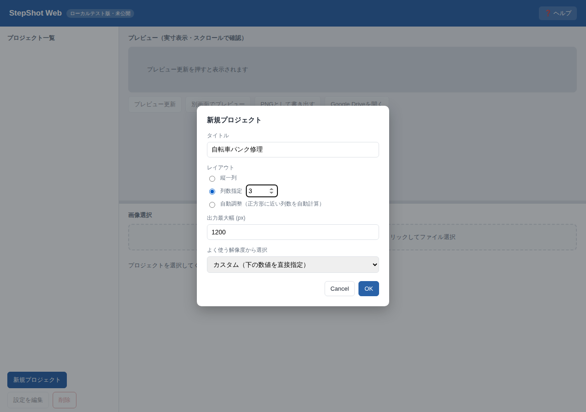
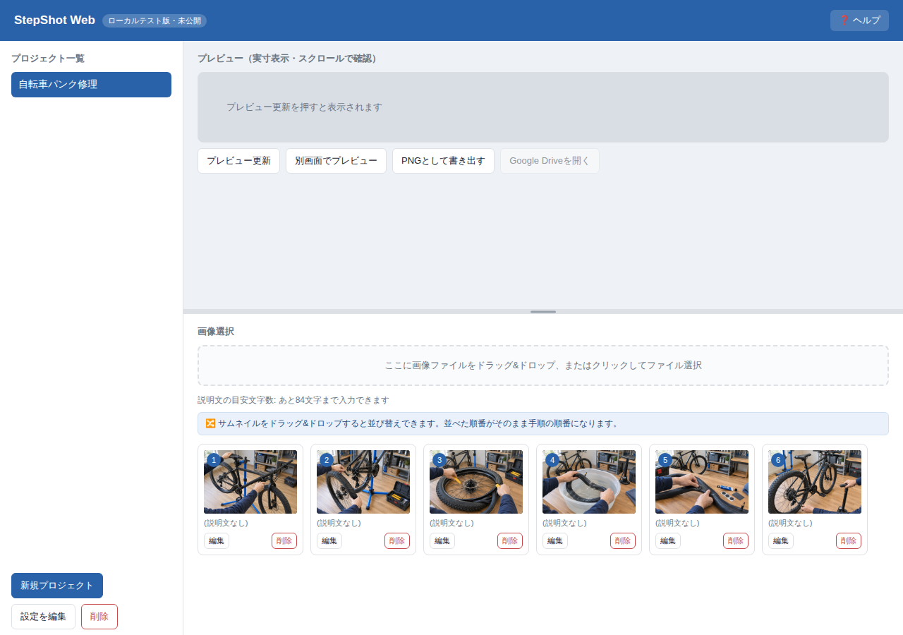
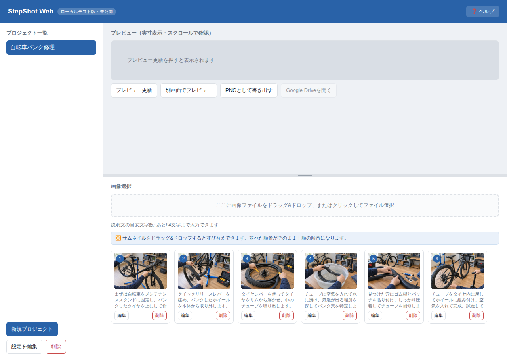
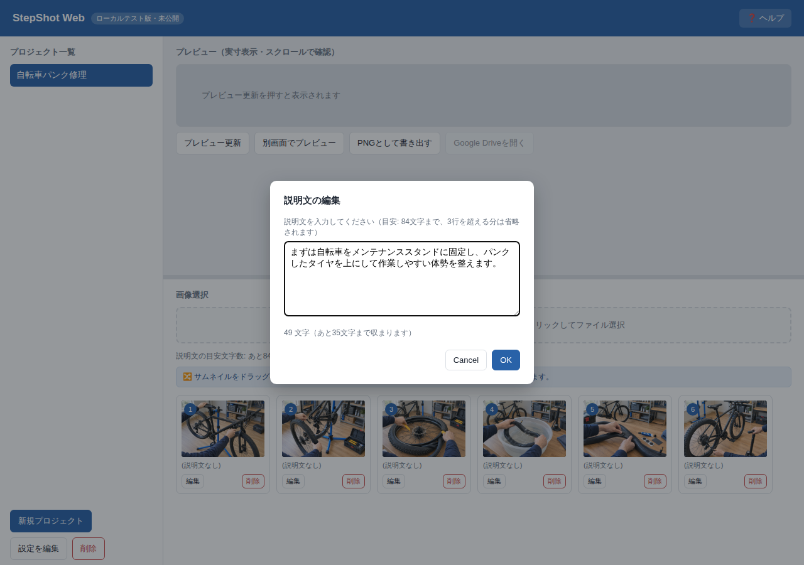
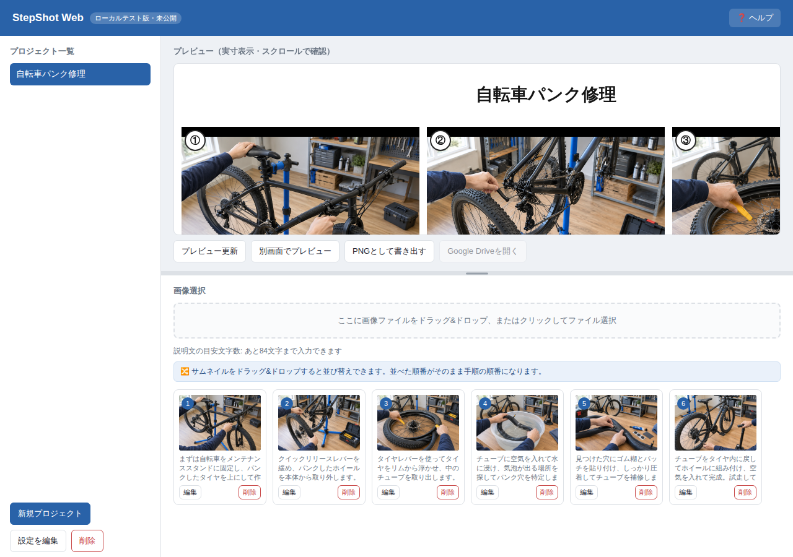
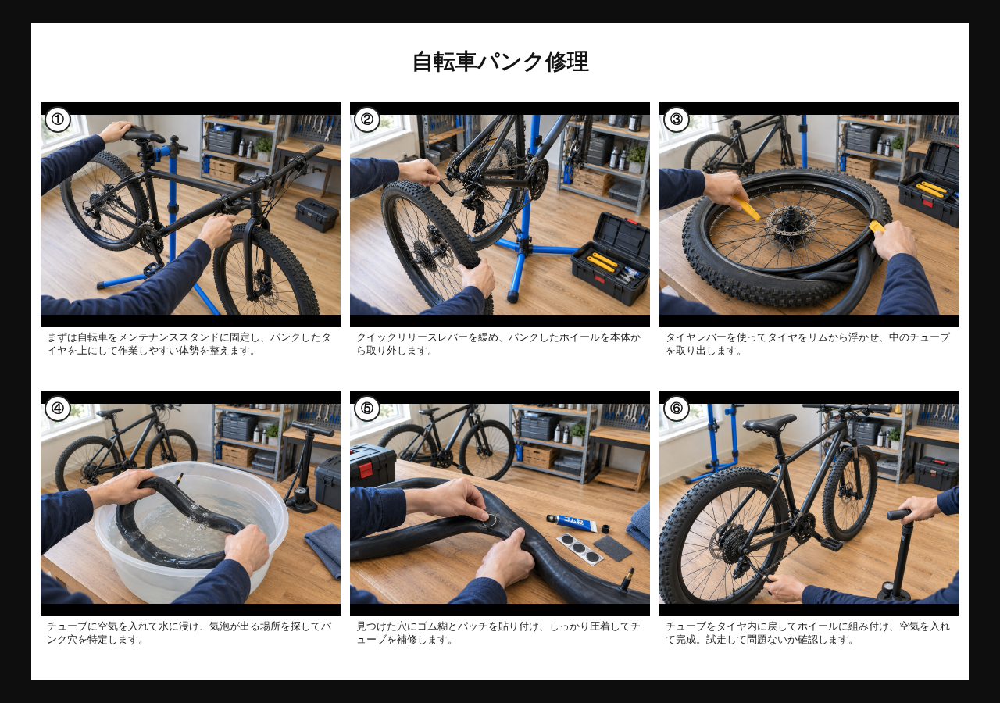
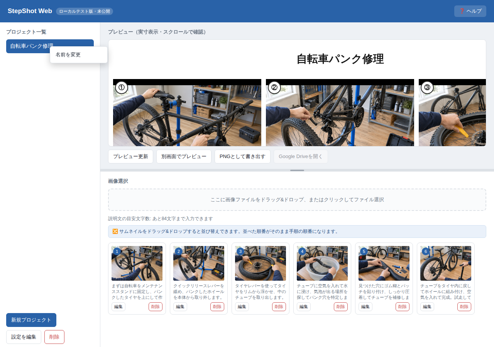

StepShot Webの使い方
手順ごとの写真を1枚のグリッド画像にまとめるツールです。 むずかしい設定は特になく、6つのステップで手順書が完成します。
プロジェクトを作る
左下の「新規プロジェクト」ボタンから始めます。タイトルと、写真をどう並べるか （縦一列・列数指定・自動調整）、出力する画像の最大幅を決めます。 迷ったら「自動調整」のままでも大丈夫です。あとから「設定を編集」でいつでも変更できます。

画像を追加する
「ここに画像ファイルをドラッグ&ドロップ、またはクリックしてファイル選択」の枠に、 パソコン内の写真をまとめて追加します。フォルダから複数選んでもいいですし、 エクスプローラー（ファイルマネージャー）から直接ドラッグしても構いません。 選んだ順番、またはドロップした順番がそのままステップの順番になります。

並び替える
サムネイルをつかんでドラッグすると、その場で順番を入れ替えられます。 画像が2枚以上あると、一覧のすぐ上に並び替えのヒントが表示されます。

説明文を入力する
各サムネイルの「編集」ボタンから、その手順の説明文を入力します。 入力中はリアルタイムで文字数が表示され、目安を超えると赤字で警告されます。 3行を超える分は、書き出し時に自動で省略記号（…）に切り詰められます。

プレビューを確認する
「プレビュー更新」を押すと、実際に書き出されるグリッド画像がその場に表示されます。 大きい画像は枠の中でスクロールして確認できます。

画面が小さくて見づらいときは、「別画面でプレビュー」を押してください。 新しいタブでブラウザ標準の画像ビューアが開き、実寸大の画像を自由に ズームイン/アウトしながら確認できます。アプリ本体の画面はそのまま残るので、 並べて見比べながら説明文を調整するのにも便利です。

書き出す・共有する
「PNGとして書き出す」を押すと、ブラウザのダウンロード機能で画像がパソコンに保存されます （通常はダウンロードフォルダに入ります）。Google Driveにアップロードしたい場合は、 書き出し後に「Google Driveを開く」を押すとDriveが新しいタブで開くので、 ダウンロードしたファイルをそこにドラッグ&ドロップしてください。
